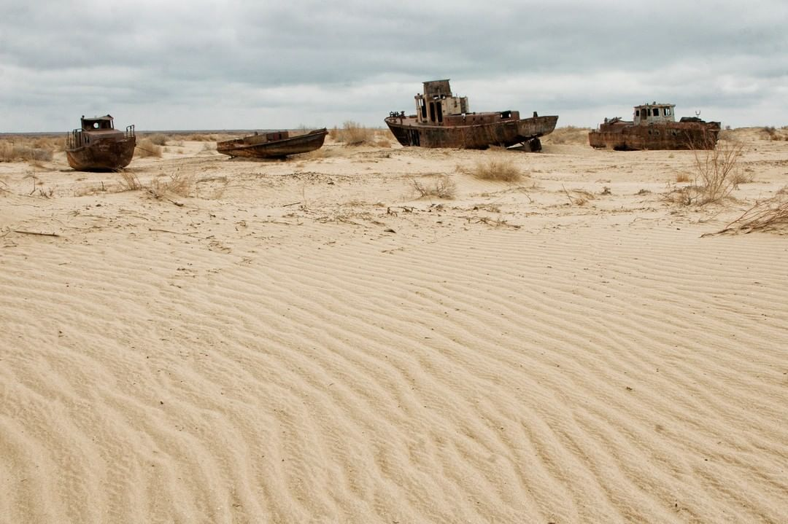

История

15 ноября 1933 года постановлением ВЦИК селение Муйнак было отнесено к категории рабочих поселков. В то время Муйнак находился в составе Кара-Калпакской АССР, которая, в свою очередь, входила в состав РСФСР.
В 1950-е годы Муйнак получил статус посёлка городского типа. В 1963 году Муйнаку был присвоен статус города. Являлся одним из крупнейших городов на берегу Аральского моря.
Кладбище кораблей
В 1960-х началось строительство мелиоративных каналов от Амударьи для орошения хлопчатника. В результате в Аральское море стало поступать меньше воды, и оно начало мелеть. В 1980-х, чтобы не закрывать рыбоконсервный завод в Муйнаке, сюда привозили замороженную рыбу из России. В начале 1990-х рыбоконсервный завод был закрыт, началась безработица, жители стали покидать свои дома и уезжать в Нукус, Кунград и другие города. Участилась повторяемость пыльно-солевых бурь, заболевания населения (глазные болезни, болезни желудочно-кишечного тракта, кожные болезни). Уровень грунтовых вод упал, ускорился процесс опустынивания местности. Оставшиеся родники стали не пригодны для питья из-за высокого содержания пестицидов (которые были смыты с хлопковых полей в Амударью). Порт превратился в кладбище кораблей.
По состоянию на 2011 год от Муйнака около 100 км до западной (глубокой) части Южного Аральского моря и около 180 км до восточной (мелководной) части. Восточная часть моря (за счёт сравнительно небольших глубин) наиболее быстро отступала от Муйнака: ещё в середине 1990-х годов она находилась на расстоянии 45 км от города, а в начале 2000-х годов — на расстоянии 100 км.
В 2008 году компанией «Петро Альянс» были проведены разведочные работы по поиску нефти и газа на бывшем дне Аральского моря; результат оказался положительным. Газ здесь высокого качества, с минимальным содержанием сероводородов.
20-21 января 2017 года началась прокладка водопроводной сети Кунград-Муйнак. Строительство сооружения стоимостью 26,6 млрд сумов и протяженностью 101 км велось пять месяцев. Чистой питьевой водой теперь обеспечены более 25 тысяч человек. Водопровод Муйнак — Учсай будет продлен на 1,51 км.
Начиная с середины 2000-х годов город стал привлекать туристов со всего мира. Поток туристов в Муйнак резко увеличился после 2016 года.
В настоящее время Муйнак является важным перевалочным пунктом для туристов и учёных, которые собираются посетить и изучать отдалённые районы высохших частей Аральского моря. Также именно через Муйнак на внедорожниках туристы попадают на довольно изменчивые берега Аральского моря, которые отошли от Муйнака на несколько десятков километров на север и восток.